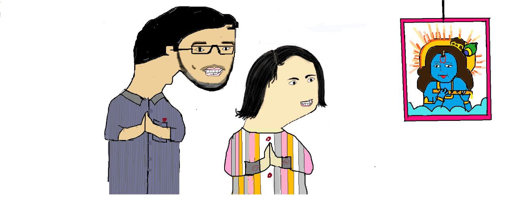

21st Feb (we met this day)
ye din bhut khaas hai....
hamari relationship(agr tujhe ye word acha nhi lge to maaf krna) isi din ek tareeke se shuru hui
vaise sach btau to mujhe ekdum ache se yaad nhi ki exactly kya hua tha, par mujhe lagta hai ki hamne
is din snapchat me kafi der tak baat ki thi uske baad hamari 1-2 din baat nhi hui thi, bas thoda bhut normal hi
hua tha
fir 24 tareekh ko shubh jeshika vala matter hua aur usme jeshika ko tujhpe shak hone laga
isi din humne pehli baar call me baat ki thi, vaise us call me intention bilkul bhi baat krne ka nhi tha
balki mai to dara hua tha, apne aap me soch rha tha kya zarurat thi mujhe school me shubh se jeshika k
bare me baat krne ki.

dar is baat ka tha ki pta nhi ab shraddha-shweta mere bare mein kya sochengi
shweta se meri baat hoti thi lekin tujhse kabhi hui nhi thi ache se. Meri bhut ache se bnayi hui image ab
kharab ho sakti thi.
isse pehle itna dar tab laga tha jab vinay ki naak tutne wali ghatna hui thi.
khair lekin aisa kuch hua nhi, ulta matter to asani se solve hogaya.
is baare me jitna sochta hu utni hairani hoti hai, maine aisa kabhi socha nhi tha, na hi mai chahta tha ki
meri kabhi shraddha se baat bhi hogi, mtlb 0% chance. balki mujhe lgta tha ki shyd kuch dino me tu shweta ko bhi daategi
aur mana karegi baat krne se.
us shraddha ko mai aaj Shraddhajaan bolta hu, bina kisi mehnat, bini kisi attraction k, bas yu hi hamari baat hone lagi
aur hame pyar ho gaya.....
vo shraddha ab hamesha mere dil-o-dimag me 24x7 rehti hai, kahi bhi jata hu kuch bhi karta hu, kahi na kahi
mere dimag k kisi na kisi hisse me shraddha ka khyal rehta hi hai.
words communication ka kitna accha zariya hai, fir bhi in baaton ko shabdo me baya karna bhut kathin hai, lines likh
jati hai lekin emotions transfer nhi ho pate.
lekin mujhe pata hai tu samajh rahi hogi mai kya kehna chahta hu
agar 21 feb 2022 wale omesh ko koi batata ki 1 saal baad koi hogi jo use special feel karayegi, uska dhyaan rkhegi
use pyaar karegi, aisa koi jisse vo apne man ki saari baatein share kar sakega aur un baato ko kayi baar samajh na ane
k bawajood vo dhyan se sunegi...
vo koi aur nhi uski classmate shraddha hai, to mujhe pura bharosa hai vo omesh is bare me 1sec bhi bina soche has kar
chala jata.
mujhe pata nhi hai ki age kya hoga, lekin ek baat zarur hai, 21 feb ki date mujhe hamesha yaad rhegi